SPEAKERS
Emma Lacey-Bordeaux
USA
Editor
CNN
Emma Lacey-Bordeaux is a platform-agnostic journalist driven by curiosity and the desire to make connections across space and perspective. Since 2008, she has worked at CNN – first as researcher, then Associate Producer, Reporter and Producer, and since 2013 as an Editor. Emma has worked on coverage for two presidential elections; the rise of the Tea Party, Occupy, and the Black Lives Matter movement; the Syrian Conflict; and the war in Ukraine.
Valentine Gogichashvili
Germany
Head of Engineering
Zalando
As Head of Engineering at Zalando Product Analytics, Valentine Gogichashvilil’s main goal is the creation of state-of-the-art A/B testing, tracking, and journey modelling services to enable data-informed decision-making throughout the whole company. He began his career as an Oracle Developer and a DBA. Since joining Zalando in 2010, one of Valentine’s primary activities has been to help Zalando’s growing team of engineers to migrate from MySQL to PostgreSQL.
Miriam Quick
UK
Researcher for Information Visualization
Miriam Quick is a data journalist and researcher whose work has been regularly featured on the BBC, Quartz, and informationisbeautiful.net. She was the lead research on David McCandless’s infographic book Knowledge is Beautiful, and recently analyzed the data from over 250 film critics for BBC Culture’s “Greatest Comedies” poll. Miriam spends her days writing data-driven stories and animation scripts, or researching and crafting copy for infographics.
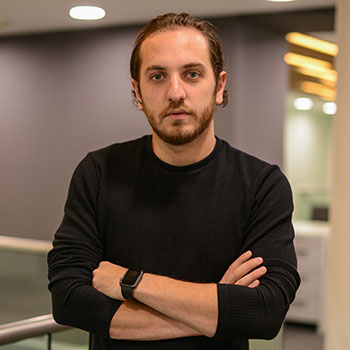
Dachi Choladze
Georgia
Co-Founder & CEO
Pulsar AI
Dachi Choladze is a co-founder and CEO of Pulsar AI, the company that specializes in Artificial Intelligence field. Pulsar AI started less than a year ago with the aim to build automated agents that could converse with users in Georgian. Since then, the team has widened its span of expertise that includes custom made Georgian NLP engine, Georgian speech to text service, deep learning based face ID technology and some vital tools for pre-processing Georgian text online.
Rayna Breuer
Germany
Data Storyteller
DW Academie
Rayna Breuer is a multimedia journalist working for Deutsche Welle, ARD, and Deutschlandfunk. She is an expert at finding stories in piles of numbers, and then telling them with innovative tools from different perspectives, Rayna is helping spearhead a new generation of journalism. Rayna previously worked with Datawrapper and other open source tools, and started with DDJ in 2012 with a project based on javascript.
Stefan Turkheimer
USA
Political Consultant
Stefan Turkheimer is a lawyer and political consultant with offices in Atlanta, Georgia and Washington, DC. For over a decade, he has advised candidates at the local, state, and national level. He specializes in boutique communications strategies for candidates and elected officials, providing top-to-bottom services, crafting candidates’ messaging and social media presence, and elevating the profiles of politicians even in the most crowded or competitive fields.
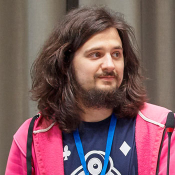
Alexey Natekin
Russia
Data Scientist / Founder
ods.ai
Alex Natekin is the founder of a series of Data-Science related projects and companies, among which are Open Data Science ods.ai, DM Labs consultancy agency dmlabs.org and Arktur ML competition platform arktur.io. Previously worked in various industry companies while organizing, raising and leading DS groups, thus claiming the title of Data Demiurge. Alex occasionally writes articles and does research in GBMs and ML applications.
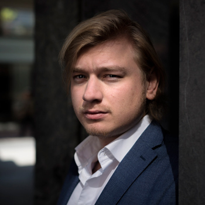
Christiaan Triebert
Netherlands
Digital Forensics Researcher
Bellingcat
Christiaan Triebert is a conflict researcher with Bellingcat, a multi-award winning collective that uses online open source information to investigate armed conflicts and corruption. Among a wide variety of topics, Triebert has especially focused on investigating airstrikes in the Middle East, also in his capacity as geolocation expert for monitoring organisation Airwars. His digital reconstruction of the Turkish coup d’état attempt won the Innovation Award of the European Press Prize.

Jason Addie
Georgia
Data Wrangler
ForSet
Jason Addie is co-founder and head of technology for ForSet, a Georgian civic tech NGO specializing in effective communications for social issues by using data, design, and technology. He analyzes data, creates story concepts, builds interactive websites, and has contributed to more than 40 interactive web stories and more than 200 visualizations. Jason can take lifeless 30 page reports and transform them into stories that the public understands and cares about.
Jelena Vasic
Serbia
Journalist/Project Manager
KRIK
Jelena Vasic is project manager and investigative reporter for the Crime and Corruption Reporting Network (KRIK) in Serbia, and has been a member of the KRIK team since its beginning in April 2015. Jelena has also worked as an investigative reporter for the Organized Crime and Corruption Reporting Project (OCCRP). As part of the KRIK investigative team Jelena has also won the international Data Journalism Award in 2017, for developing a unique online Database of Assets of Serbian Politicians.
Jakub Gornicki
Poland
Co-founder
Outride.rs
Jakub Gornicki is co-founder of and reporter for Outriders. His work combines new technologies and storytelling to the fields of journalism, blogging, government accountability, and transparency. Jakub was also a board member and COO of the ePaństwo Foundation, which he helped develop into an internationally prominent open data and transparency NGO, and worked in training and software implementation with Sourcefabric.
Thomas Burns
Georgia
Digital Storyteller
Thomas Burns is an award-winning story producer and film director specializing in scripted, non-fiction, and advertising content. His background includes over a decade of training in Hollywood on feature films (including Where the Wild Things Are and Die Hard 4), dramatic television (CSI, Dexter), documentaries (National Geographic, Discovery Channel), and hundreds of commercials. His work has been screened in broadcast, gallery exhibitions, and film festivals around the world.
Mariam Kobuladze
Georgia
DataViz Designer
Mariam Kobuladze has more than 5 years of experience working with infographics and UI/UX design. Mariam is currently working on a variety of projects as a freelance designer. Recently she has spent four years working with JumpStart Georgia, designing award-winning infographics, interactive visualizations and data portals. Mariam also teaches at the Caucasus School of Technology in Tbilisi, Georgia.
Richard Morrisroe
Ireland
Data Scientist
Facebook
Richard Morrisroe is a Data Scientist at Facebook with many years of experience. Highly skilled with data analysis, machine learning, predictive analytics and SQL, his particular specialty is in converting business problems into forms in which they can be answered by data. He has extensive experience with extremely large data sets and uses R, Java, Python and Bash on a regular basis. Richard uses his skills to build cohort-based customer lifetime value models for Facebook customers to help them optimize their advertisement spend.
Andriy Gazin
Ukraine
Data Journalist
Textura.in.ua
Andriy Gazin is a data journalist who uses programming, data analysis, and data visualization to find and tell stories. Andriy’s interests include the R programming language, life-blogging, and comic books and graphic novels. The former head of the infographics department at weekly magazines Korrespondent and Novoe Vremya, Andriy spends much of his time providing training sessions on data analysis and visualization for journalists and NGOs and keeping up his data journalism blog textura.in.ua.
Anastasia Valeeva
Kyrgyzstan
Data Journalism Trainer
Anastasia Valeeva is a data journalism instructor and open data researcher. She researched the use of open data in investigative journalism as part of her fellowship at the Reuters Institute for the Study of Journalism in Oxford, UK. Anastasia has taught data journalism at Data Bootcamps in Montenegro and Germany, at Data Journalism Summer Institutes in Kyrgyzstan, Albania, and Russia. She is currently a data journalism lecturer at the American University of Central Asia, Kyrgyzstan.
Mick Cooney
Ireland
Dublin Data Science
Organizer
Mick Cooney is a statistical modelling consultant specializing in financial services, and has over 15 years of experience in quantitative finance and insurance. Mick completed a PhD in Computational Quantitative Finance and spent 10 years modelling volatility for equity and equity index derivatives. He has spent the last few years in insurance helping companies in both life and general insurance with their modelling needs and has a particular focus on pricing and risk modelling for specialty insurance.
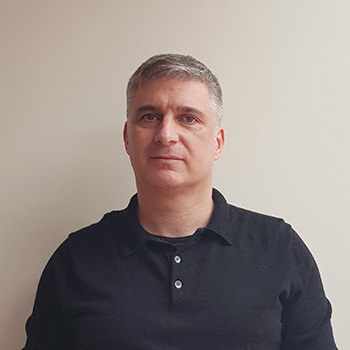
Michael Crawford
UK
Head of Data & Analytics
Barnett Waddingham
Eric Barrett
Georgia
Data Consultant
Eric Barrett has worked in the field of data, technology, and transparency for almost 10 years. From 2008-2010 he worked at Transparency International Georgia as Digital Organizer. Eric became Executive Director in 2012 and took JumpStart in a new direction, combining data and visualizations with journalism to tell stories from Georgia in innovative ways. Eric now teaches and works with organizations in the Caucasus, telling stories in which data and design are crucial components.
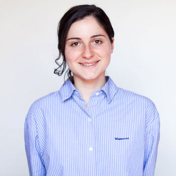
Mariam Gamkharashvili
Georgia
Data Researcher & Co-Founder
ForSet
Mariam Gamkharashvili has been managing and creating data storytelling projects for over 4 years, and has developed more than 100 unique infographics, animations, and multimedia stories. She is co-founder and data researcher at ForSet. Mariam is currently studying the use of technology in cities for her PhD.
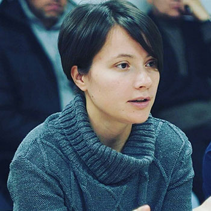
Nadiia Babynska
Ukraine
Open Data Policy Expert
Open Data Lab Ukraine
Nadiia Babynska is a Ukrainian media expert, investigative journalist, trainer, and activist for open data and access to public information. She is a consultant for the open data project in TAPAS and a coordinator of the Technovation Challenge in Ukraine. Currently Nadiia also coordinates the Youth Innovation Challenge in democracy and human rights in Ukraine. Nadiia has previously worked as project manager for the Open Data Portal of the Ukrainian Parliament project.
Giorgi Jvaridze
Ireland
Data Engineer
Zalando
Giorgi Jvaridze is a Software Engineer specializing on Data Science, Data Engineering and Distributed Computing topics. He's currently at Zalando, Europe's largest online fashion retailer, in their Fashion Insights Centre in Dublin, Ireland. Giorgi is building software that utilizes the vast amount of customer data and produces insights that helps the business to make better decisions. Prior to Zalando, he was working at TripAdvisor helping to make the website more personalized.
Amil Osmanli
Ireland
Software Engineer
Zalando Ireland
Amil Osmanli is a software engineer working in Dublin for one of the biggest European online retailers. Amil started his engineering career with Amazon Data Services Ireland, and worked on building web-services for Amazon infrastructures. He joined Zalando in April 2015, and is currently building and maintaining RESTful web-services that are an integral part of the infrastructure, and capable of through putting high loads.
Pavel Nesterov
Russia
Data Scientist
ods.ai
Pavel Nesterov talents include writing python code, stacking layers, adding more trees, generating adversarial examples, teaching deep learning, building random projections, and popularizing machine learning. Pavel holds an MS in Applied Mathematics. Sometimes Pavel works in large companies for money, but not very often.
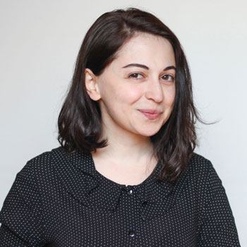
Ia Ninoshvili
Georgia
Designer & Co-Founder
ForSet
Ia Ninoshvili is an illustrator and graphic designer with over eight years of experience, creating more than 80 infographics, animations, and factographs in that time. Ia co-founded ForSet to increase the effectiveness of communications using data, technology and design.
Vitalii Duk
United Arab Emirates
Senior Data Scientist
Dubizzle
Vitalii Duk is a senior data scientist at Dubizzle, and is responsible for harnessing the power of big data to improve the user experience. Working at the leading classifieds platform in the UAE, Vitalii employs analytics and insights from Dubizzle to detect fraudulent posts, ensure product price optimization, and build tailored recommendation engines in order to provide a seamless experience for Dubizzle users.
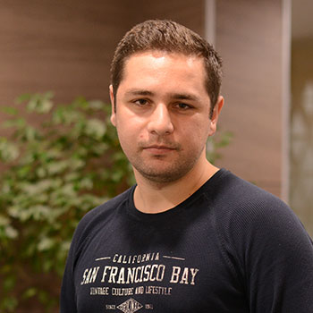
Rudolf Eremian
Georgia
Machine Learning Engineer
Pulsar AI
Rudolf's interest in Natural Language Processing started in 2014, when he was developing a tool for managing linguistic corpus at Institute of Machine Mechanics. During that project, He did the research about Automatic Georgian Dialect Identification, which was awarded "Best Scientific Research of the Tbilisi State University 76th Student Conference". Since 2016 december Rudolf joined to PulsarAI as ML / NLP software engineer and developed chatbot framework, adapted for Georgian texts.

Vincenzo Lagani
Greece
COO & Co-Founder
Gnosis Data Analysis
Vincenzo Lagani is an experienced data scientist, software developer, and co-founder of Gnosis Data Analysis, which provides data analysis for insurance companies, health care providers, and many others. Vincenzo holds a PhD in Operations Research, and has (co)authored more than 30 scientific publications in the past eight years of working with the Foundation for Research and Technology Hellas (FORTH) and the University of Crete.
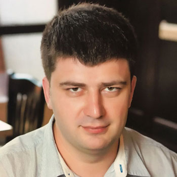
Nickolai Kvantaliani
Belarus
Security Expert
Nikolai Kvantaliani has been the director of the “New Group” Civil Society activists since 2001. Nikolai has also worked as a board member of the National Youth Council of Belarus from 2007 – 2011 and Steering Committee member of the Eastern Partnership Civil Society Forum from 2012 – 2014, and has been training activists for more than a decade. Nikolai’s current focus is on Digital Security and New Media for NGOs, and he often acts as trainer, consultant, and as an expert in this field.
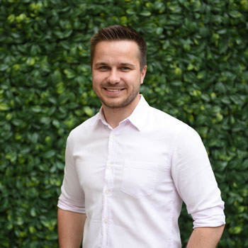
Viktor Nestulia
Ukraine
Director of Innovation Projects Programme
TI Ukraine, ProZorro
Before the Ukrainian Revolution of Dignity in 2014, Viktor worked in the country’s largest agro-industrial company where he was responsible for analysis and procurement. After the Revolution, he moved to the public sector looking at investment and cooperation with international financial organizations at the Ministry of Infrastructure. When the process of national public procurement reform was launched, he joined Transparency International as a coordinator of the ProZorro project on behalf of civil society. After successfully implementing the ProZorro e-procurement system, he has been working on building a monitoring ecosystem around ProZorro using innovative tools, risk indicators and the implementation of Open Contracting Data Standard

Dmitriy Selivanov
United Arab Emirates
Data Scientist
Majid Al Futtaim
Dmitriy Selivanov is a senior data scientist at Majid Al Futtaim (Dubai, UAE). He is responsible for building recommendation systems for loyal customers. Dmitriy also develops systems to support marketing campaigns. Before joining Majid Al Futtaim, Dmitriy worked as data scientist at noon.com and Odnoklassniki, where he was involved in projects related to NLP and recommendation systems. Dmitriy develops and maintains several popular open-source projects, most notably text2vec, a framework for natural language processing in R.
Levan Tsinadze
Georgia
Research Scientist
Pulsar AI
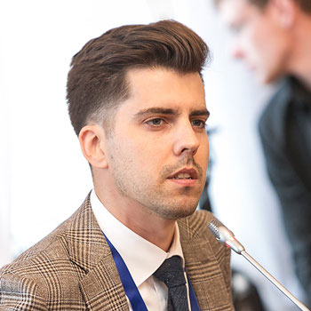
Karolis Granickas
Lithuania
Senior Program Manager
Open Contracting Partnership
Karolis Granickas is a senior program manager at Open Contracting Partnership. Prior to that, Karolis worked with Transparency International focusing on citizen engagement using ICT. Also, together with the Epsi platform, Open Knowledge International, Open Data Institute and others, he contributed to global open data advocacy efforts. Karolis has earned his Bachelor’s degree in International Law from the University of Westminster (UK) and Master’s degree in European Union Law from the University of Maastricht (the Netherlands).

Oana Calugar
Germany
Consultant
Performance+
Oana Calugar is a principle consultant with Performance+, where she helps managers develop high-performance teams using an Objective and Key Results (OKR) framework. Oana also works as a consultant, coach and trainer, helping clients achieve results supported by data analytics and improve employee engagement. Oana’s passion lies in helping improve the performance of clients in a transparent and data-driven manner.
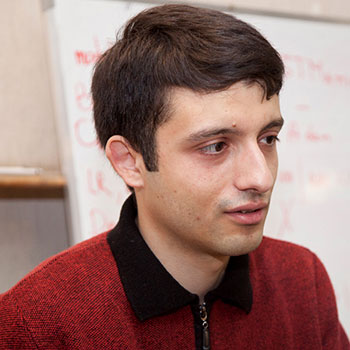
Hrant Khachatrian
Armenia
Researcher
YerevaNN lab
Hrant Khachatrian is a research scientist at YerevaNN lab. His research interests include deep learning and graph theory. He got his PhD in mathematics from Yerevan State University. Hrant also works at IntelinAir, a startup that brings state-of-the-art computer vision to agriculture.

Soso Khutsishvili
Georgia
Organizer
Deep Learning Tbilisi
Soso Khutsishvili is co-founder of multiple startups and an organizer of Deep Learning Tbilisi meetup group. He has more than a decade of experience with technology and data. Soso has participated in many Machine Learning projects and is interested in involving young people into data science community.
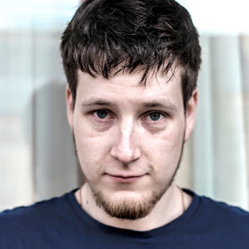
Viktor Cherkaskyi
Ireland
Data Engineer
Zalando
Viktor Cherkaskyi is a Software Engineer at Zalando, the biggest online fashion shop in Europe. Interested in the Data Structures & Algorithms, Applied Data Science and Distributed Data Processing, Viktor is working on customer data processing software, which helps direct business decisions in various areas including marketing campaigns, A/B testing and others. Previously worked at TripAdvisor, building the data improvement automation pipeline with improvement signals coming from various sources, having different trustworthiness and quality.

Andrew Jvirblis
Russia
Declarator Project Head
Transparency International Russia
Andrew joined Transparency International movement 6 years ago as the director of public relations for the Russian chapter. Later he switched to be the head of Declarator.org project, which is the unified database of income and asset declaration of Russian public officials. The field of his interests include data standards, registries of public service employees and the legal limitations for them.
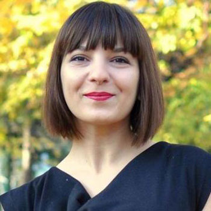
Elena Calistru
Romania
The Chair and Founder
Funky Citizens
Elena Calistru is the chair and founder of Funky Citizens, a Romanian-based NGO. Funky Citizens builds research-based, data-driven advocacy tools. Funky Citizens’ tools aim to be educational and actionable, encouraging citizens to engage in accountability and government responsibility initiatives in which they can see an impact. Elena has more than 7 years of experience in civil society projects, both at national and international level. Her expertise is mainly in the area of good governance, transparency, public finance and advocacy. She strongly believes that data and online tools can empower citizens to influence public sector reform.
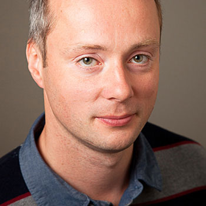
Marco Schmidt
Netherlands
Policy Development Officer
RIPE NCC
Marco Schmidt is the RIPE NCC’s Policy Development Officer. In this role, he supports and drives the RIPE (community) Policy Development Processes (PDP), both externally and internally. He also supports the implementation of accepted policies into RIPE NCC procedures and workflow.
Marco also delivers RIPE NCC training courses to Local Internet Registries in the RIPE NCC’s service region (Europe, the Middle East and parts of Central Asia).
Marco graduated from the Ilmenau University of Technology in Germany, with a diploma in Media Economy and Service Management. Prior to joining the RIPE NCC, he worked at a technical helpdesk for a global network company.